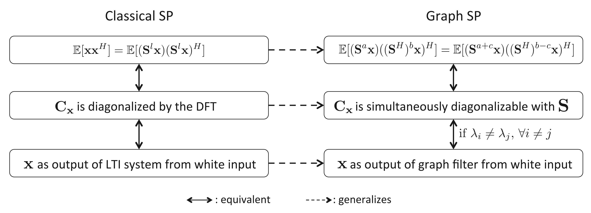

using LinearAlgebra, DSPPreliminary Study
Simultaneously Diagonalizable
매트릭스 \({\bf A}\)와 \({\bf B}\)가 대각화 가능하다는 것은 아래의 표현을 만족하는 적당한 invertible matrix \({\bf \Psi}_A\), \({\bf \Psi}_B\)와 대각행렬 \({\bf \Lambda}_A\), \({\bf \Lambda}_B\)가 존재한다는 의미가 된다.
\[{\bf A} = {\bf V}_{A} {\bf \Lambda}_A {\bf V}_{A}^{-1}\]
\[{\bf B} = {\bf V}_{B} {\bf \Lambda}_B {\bf V}_{B}^{-1}\]
그리고 만약에 \({\bf V}_{A}={\bf V}_{B}\)이라면 즉
\[{\bf A} = {\bf V} {\bf \Lambda}_A {\bf V}^{-1}\]
\[{\bf B} = {\bf V} {\bf \Lambda}_B {\bf V}^{-1}\]
이라면 \(\{{\bf A},{\bf B}\}\)가 simultaneously diagonalzable 하다고 표현한다.
Commute
두 matrix \({\bf A}\)와 \({\bf B}\)에 대하여
\[{\bf A}{\bf B}= {\bf B}{\bf A}\]
인 관계가 성립하면 두 매트릭스가 commute 한다고 표현한다. 그런데 \({\bf A}{\bf B}={\bf A}{\bf B}\)의 조건은 \({\bf A}, {\bf B}\)가 동시대각화가능할 (simultaneously diagonalzable) 조건과 같다. 1 따라서 simultaneously diagonalzable 는 commute와 같은 말이라 생각해도 무방하다.
1 필요충분조건이다.
참고: 위키피디아..
Shift Invariant Filter
ref: Djuric and Richard (2018) Chap 8.3 의 내용 중 일부
Djuric, Petar, and Cédric Richard. 2018. Cooperative and Graph Signal Processing: Principles and Applications. Academic Press.
Define the matrix \({\bf B}\) as periodic shift matrix such that
\[ {\bf B} = \begin{bmatrix} 0 & 0 & 0 & \dots & 0 & 1 \\ 1 & 0 & 0 & \dots & 0 & 0 \\ 0 & 1 & 0 & \dots & 0 & 0 \\ \dots & \dots & \dots & \dots & \dots & \dots\\ 0 & 0 & \dots & 1 & 0 & 0 \\ 0 & 0 & \dots & 0 & 1 & 0 \\ \end{bmatrix}.\]
A generic filter \({\boldsymbol h}\) is given by its \(z\)-transform
\[h(z)=h_0z^0+h_1z^{-1}+\cdots +h_{N-1}z^{-(N-1)}\]
where \(s_{n-1}=z^{-1}s_n\). In vector notation, and with respect to the standard basis \({\bf I}\), the filter is represented by the matrix \({\bf H}\), a polynomial in the cyclic shift
\[{\bf H}=h({\bf B})=h_0{\bf B}^0+h_1{\bf B}^1+\cdots+h_{N-1}{\bf B}^{N-1}.\]
Filters are shift invariant iff
\[z\cdot h(z) = h(z)\cdot z\]
or from the matrix representation
\[{\bf B}h({\bf B})=h({\bf B}){\bf B}.\]
Example
Let \({\bf B}\) as
B= [0 1 0 0 0 0 0
0 0 1 0 0 0 0
0 0 0 1 0 0 0
0 0 0 0 1 0 0
0 0 0 0 0 1 0
0 0 0 0 0 0 1
1 0 0 0 0 0 0]7×7 Matrix{Int64}:
0 1 0 0 0 0 0
0 0 1 0 0 0 0
0 0 0 1 0 0 0
0 0 0 0 1 0 0
0 0 0 0 0 1 0
0 0 0 0 0 0 1
1 0 0 0 0 0 0Define \({\boldsymbol h}\) as
h = [1/3,1/3,1/3]3-element Vector{Float64}:
0.3333333333333333
0.3333333333333333
0.3333333333333333Furthermore define \({\bf H}=h({\bf B})=h_0{\bf B}^0+h_1{\bf B}^1+h_2{\bf B}^2\)
H = (1/3)*B^0 + (1/3)*B^1 + (1/3)*B^2 7×7 Matrix{Float64}:
0.333333 0.333333 0.333333 0.0 0.0 0.0 0.0
0.0 0.333333 0.333333 0.333333 0.0 0.0 0.0
0.0 0.0 0.333333 0.333333 0.333333 0.0 0.0
0.0 0.0 0.0 0.333333 0.333333 0.333333 0.0
0.0 0.0 0.0 0.0 0.333333 0.333333 0.333333
0.333333 0.0 0.0 0.0 0.0 0.333333 0.333333
0.333333 0.333333 0.0 0.0 0.0 0.0 0.333333Observe following:
B*H == H*B trueThus, filter \({\boldsymbol h}\) is shift invariant filter and matrix \({\bf H}\) is shift invariant operator.
note: \({\boldsymbol h}\) is moving average filter.
note: for any \({\bf x}\), \({\bf H}{\bf x}\) is definded by
\[\left[\frac{x_{n-1}+x_n+x_1}{3},\frac{x_n+x_1+x_2}{3},\dots,\frac{x_{n-3}+x_{n-2}+x_n}{3}\right].\]
x = [1,1,1,1,2,2,2]
H*x7-element Vector{Float64}:
1.0
1.0
1.3333333333333333
1.6666666666666665
2.0
1.6666666666666665
1.3333333333333333note: In some sense, the matrix \({\bf H}{\bf x}\) can be thought as generalized version of \({\boldsymbol h}\star {\bf x}\) where \(\star\) is convolution up to shift
conv(h,x)9-element Vector{Float64}:
0.3333333333333334
0.6666666666666667
1.0
1.0
1.3333333333333333
1.6666666666666667
2.0
1.3333333333333333
0.6666666666666667Finally, we observe that, from the Cayley-Hamilton Theorem, \({\bf B}\) satisfies its characteristic polynomial \(\Delta({\bf B})\), where \(\Delta(\lambda)\) is the determinant of \(\lambda{\bf I}-{\bf B}\). The characteristic polynomial \(\Delta({\bf B})\) has degree \(N\), so, in DSP, as described so far, linear filters are (matrix) polynomial with degree at most \(N-1\).
이 부분은 책에 써있길래 가져오긴 했는데, 무슨 의미인지 모르겠음
Weakly Stationary Graph Processes
We extend three equivalent definitions of weak stationary in time to the graph domain, the most common being the invariance of the first and second moments to time shifts.
Definition 12.1. Given a normal shift operator \({\bf S}\), a zero-mean random process \({\bf x}\) is weakly stationary with respect to \({\bf S}\) if it can be written as the response of a linear shift-invariant graph filter \({\bf H}=\sum_{l=0}^{N-1}h_l{\bf S}^l\) to a zero-mean white input \({\bf n}\).
Definition 12.2. Given a normal shift operator \({\bf S}\), a zero-mean random process \({\bf x}\) is weakly stationary with respect to \({\bf S}\) is the following two equivalent properties hold
(a) For any set of nonnegative integers \(a\),\(b\), and \(c\leq b\) it holds that
\[\mathbb{E} \bigg[ \big({\bf S}^a{\bf x}\big)\Big(\big({\bf S}^H)^b {\bf x}\Big)^H \bigg]=\mathbb{E}\bigg[\big({\bf S}^{a+c}{\bf x}\big)\Big(\big({\bf S}^H\big)^{b-c}{\bf x} \Big)^H \bigg]\]
(b) Matrices \({\bf C}_{\bf x}\) and \({\bf S}\) are simultaneously diagonalizable.
The statements in Definition 12.2 can indeed be shown to be equivalent (Marques et al. 2017). Definition 12.2b characterizes stationarity from a graph frequency perspective by requiring the covariance \({\bf C}_{\bf x}\) to be diagonalized by the GFT matrix \({\bf V}\). When particularized to time, Definition 12.2b requires \({\bf C}_{\bf x}\) to be diagonalized by the Fourier matrix and, therefore, must be circulant. This fact is exploited in classical signal processing to define the PSD of a stationary process as the eigenvalues of the circulant covariance matrix, motivating the PSD definition in Section 12.2.1
Marques, Antonio G, Santiago Segarra, Geert Leus, and Alejandro Ribeiro. 2017. “Stationary Graph Processes and Spectral Estimation.” IEEE Transactions on Signal Processing 65 (22): 5911–26.
Thus far, we have presented three extensions of the concept of stationarity into the realm of graph processes, two of which are equivalent and, hence, grouped in Definition 12.2. At this point, the attentive reader might have a natural inquiry. Are Definitions 12.1 and 12.2 equivalent for general graphs, as they are for stationarity in time? In fact, it can be shown that Definitions 12.1 and 12.2 are equivalent for any graph \({\bf S}\) that is normal and whose eigenvalues are all distinct (Marques et al. 2017). Follwing figure presents a concise summary of the definitions discussed in this section.

Coexisting Approaches
Stationary graph processes were first defined and analyzed in (Girault 2015). The fundamental problem identified there is that GSOs do not preserve energy in general and therefore cannot be isometric (Gavili and Zhang 2017). This problem is addressed in (Girault, Gonçalves, and Fleury 2015) with the definition of an isometric graph shift that preserves the eigenvector space of the Laplacian GSO but modifies its eigenvalues.
Girault, Benjamin. 2015. “Stationary Graph Signals Using an Isometric Graph Translation.” In 2015 23rd European Signal Processing Conference (EUSIPCO), 1516–20. IEEE.
Gavili, Adnan, and Xiao-Ping Zhang. 2017. “On the Shift Operator, Graph Frequency, and Optimal Filtering in Graph Signal Processing.” IEEE Transactions on Signal Processing 65 (23): 6303–18.
Girault, Benjamin, Paulo Gonçalves, and Éric Fleury. 2015. “Translation on Graphs: An Isometric Shift Operator.” IEEE Signal Processing Letters 22 (12): 2416–20.
A stationary graph process is then defined as one whose probability distributions are invariant with respect to multiplications with the isometric shift. One drawback of this approach is that the isometric shift is a complex-valued operator and has a sparsity structure (if any) different from \({\bf S}\). By contrast, the vertex-based definition in
\[\mathbb{E} \bigg[ \big({\bf S}^a{\bf x}\big)\Big(\big({\bf S}^H)^b {\bf x}\Big)^H \bigg]=\mathbb{E}\bigg[\big({\bf S}^{a+c}{\bf x}\big)\Big(\big({\bf S}^H\big)^{b-c}{\bf x} \Big)^H \bigg]\]
is based on the original GSO \({\bf S}\), which is local and real-valued. As a result, above Eq. provides intuition on the relations between stationarity and locality, which can be leveraged to develop stationarity tests or estimation schemes that work with local information. Graph stationarity was also studied in (Perraudin and Vandergheynst 2017) where the requirement of having a covariance matrix diagonalizable by the eigenvectors of the Laplacian GSO is adopted as a definition. This condition is shown to be equivalent to statistical invariance with respect to the translation operator introduced in (Shuman, Ricaud, and Vandergheynst 2016). When the shift \({\bf S}\) coincides with the Laplacian of the graph and the eigenvalues of \({\bf S}\) are all distinct, Definitions 12.1 and 12.2 are equivalent to those in Perraudin and Vandergheynst (2017). Hence, the definitions presented here differ from (Perraudin and Vandergheynst 2017) in that we consider general normal shifts instead of Laplacians and that we see Definition 12.1 as a definition, not a property. These are mathematically minor differences that are important in practice though; see Segarra et al. (2017) for more details.
Perraudin, Nathanaël, and Pierre Vandergheynst. 2017. “Stationary Signal Processing on Graphs.” IEEE Transactions on Signal Processing 65 (13): 3462–77.
Shuman, David I, Benjamin Ricaud, and Pierre Vandergheynst. 2016. “Vertex-Frequency Analysis on Graphs.” Applied and Computational Harmonic Analysis 40 (2): 260–91.
Segarra, Santiago, Antonio G Marques, Gonzalo Mateos, and Alejandro Ribeiro. 2017. “Network Topology Inference from Spectral Templates.” IEEE Transactions on Signal and Information Processing over Networks 3 (3): 467–83.
Summary
이 섹션에선 우리는 \(\bar{\bf x}:=\mathbb{E}[{\bf x}]={\bf 0}\)을 가정한다. 일반적인 우리에게 익숙한 정상시계열의 정의는 아래와 같다.
(정의1) \({\bf x}\)가 정상시계열이다. \(\overset{def}{\Longleftrightarrow}\) 모든 \(l=0,1,2,\dots\)에 대하여 \(\mathbb{E}[{\bf x}{\bf x}^H] = \mathbb{E}\big[({\bf B}^l{\bf x})({\bf B}^l{\bf x})^H \big]\)이 성립한다.
또한 \({\bf x}\)가 정상시계열이라면 적당한 white noise \({\bf n}\)에 대하여 \({\bf x} = {\bf H}{\bf n}\)를 만족하는 shift invariant operater \({\bf H}=\sum_{l=0}^{N-1}h_l {\bf B}^l\)가 존재함이 알려져 있다. (Wold’s theorem의 특수한 형태인 듯) 이 정리를 마치 정의와 같이 사용하면 아래와 같이 시계열의 정상성을 정의할 수 있다.
(정의2) \({\bf x}\)가 정상시계열이다. \(\overset{def}{\Longleftrightarrow}\) 임의의 \({\bf n}\)에 대하여 \({\bf x}={\bf H}{\bf n}\)를 만족하는 shift invariant opertor \({\bf H}\)가 항상 존재한다.
한편 \({\bf C}_{\bf x}=\mathbb{E}[{\bf x}{\bf x}^H]={\bf H}{\bf H}^H\)와 같이 표현가능한데 \({\bf H}\)와 \({\bf B}\)는 같은 고유벡터행렬을 가지고2 \({\bf H}^H{\bf H}\)는 \({\bf H}\)와 같은 고유벡터행렬을 가지므로3 결국 \({\bf C}_{\bf x}\)와 \({\bf B}\)는 같은 고유벡터 행렬을 가진다고 볼 수 있다. 따라서 아래와 같이 쓸 수 있다.
2 shift invariant operator의 정의에 의하여 \({\bf H}{\bf B}={\bf B}{\bf H}\)가 성립하니까
3 \({\bf H}{\bf H}^H={\bf \Psi}{\bf D}{\bf D}^H{\bf \Psi}^H\)이니까, 여기에서 \({\bf D}\)는 \({\bf H}\)의 고유벡터행렬임
\[\begin{align} {\bf C}_{\bf x} & = {\bf \Psi} \cdot \text{적당한대각행렬} \cdot {\bf \Psi}^H \\ &= {\bf DFT}^H \cdot \text{적당한대각행렬} \cdot {\bf DFT} \end{align}\]
이러한 직관에서 아래와 같이 시계열의 정상성에 대한 세번째 정의를 이해할 수 있다.
(정의3) \({\bf x}\)가 정상시계열이다. \(\overset{def}{\Longleftrightarrow}\) \({\bf C}_{\bf x}\)는 \({\bf DFT}\) 행렬로 대각화 가능하다. (\({\bf C}_{\bf x}\)와 \({\bf B}\)는 같은 고유벡터 행렬을 가진다.)
정상시계열에 대한 세가지 정의는 아래와 같이 정상 그래프신호로 확장가능하다.
차이점은 Wold’s theorem 이 성립하기 위해서 \(\lambda_i \neq \lambda_j, \forall i\neq j\) 조건이 추가된다는 것이다.